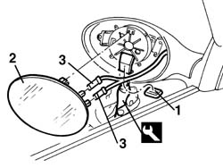

7005R35 door mirror reflector - r r
- Path
- Procedures > 70 FITTINGS > 7005 PASSENGER COMPARTMENT FRONT SIDE DOORS > 7005R front door mirrors > 7005R35 door mirror reflector - r r
- Kind
- repair procedure (removal / refitting; the operation number is the code)
- Applies to
- all engines; all production periods
- Interactive page
- https://sloeber94.github.io/elrnDB-a156/en/#/3238627
Applies to: all engines; all production periods
 Removing
Removing
 Refitting
Refitting1. Take the collar badge for the closing of the louver off.
2. Operating through the louver, by the suitable tool, take the reflector off.
 | Name | Country |
|---|---|---|
2 | Scraper blade | 1.823.014.000 |
3. Disconnect the electrical connections from the reflector.

Applies to: all engines; all production periods
Refitting
RemovingCheck that the reflector is not damaged.
Connect the electrical connections of the reflector.
Hook the reflector.
Test the functionality of the driving mirror.
Dowel the collar badge for the closing of the louver.